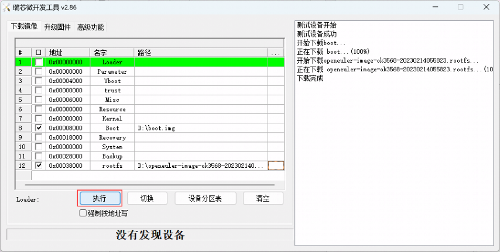
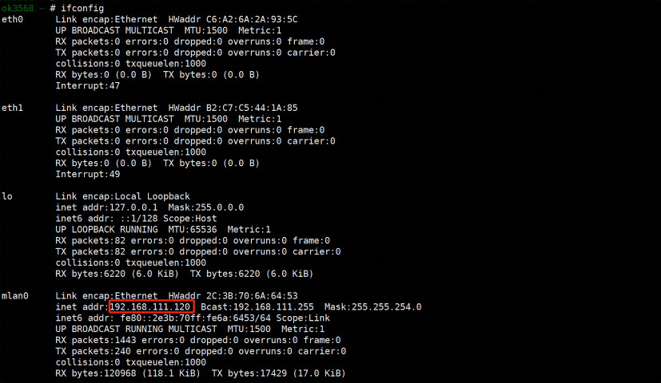

Rockchip板卡镜像构建与使用¶
本章主要介绍openEuler Embedded中Rockchip系列板卡的构建，使用和特性介绍。
Rockchip镜像构建指导¶
参照 oebuild安装步骤 完成oebuild安装，并详细了解构建过程
依次执行以下例子命令完成构建
# 生成ok3568配置文件，目前支持的设备有ryd-3568,ok3568,ok3588.ok3399。如果添加了自己的设备请改对应的名字 oebuild generate -p ok3568 -d ok3568 # 进入构建交互终端 oebuild bitbake # 构建镜像 bitbake openeuler-image # 构建sdk bitbake openeuler-image -c populate_sdk
除了使用上述命令oebuild generate -p ok3568 -d ok3568进行配置文件生成之外，还可以使用如下命令进入到菜单选择界面进行对应数据填写和选择，效果跟上述命令相同。
oebuild generate具体界面如下图所示:

二进制介绍：
boot.img: openEuler Embedded 适用rk3568内核镜像。
rootfs.img: 适用rk3568根文件系统，由xxx.ext4改名生成。
boot.img: openEuler Embedded 适用rk3568内核镜像。
update.img: 整体的烧录镜像，可自行定制，请参考yocto-meta-rockchip/wic/generic-gptdisk.wks.in与yocto-meta-rockchip/conf/machine/include/rockchip-common.inc中的方法。
openeuler-glibc-x86_64-openeuler-image-aarch64-ok3568-toolchain-*.sh: SDK工具链。
镜像使用方法，以飞凌ok3568为例¶
烧写前镜像使用
创建挂载目录
mkdir ${WORKDIR}/rootfs挂载rootfs
mount -t ext4 openeuler-image-ok3568-\*.rootfs.ext4 ${WORKDIR}/rootfs挂载完成后，可以查看ok3568根文件系统的文件或者自行添加内容。
镜像烧录仅支持windows:
将文件DriverAssitant_v5.11.zip解压到任意目录，以管理员权限运行打开DriverInstall.exe 程序，然后点击“驱动安装”进行安装。


内核镜像和文件系统烧写方法¶
准备工作：将瑞芯微开发工具RKDevTool_Release.zip解压到全英文路径下，打开瑞芯微开发工具RKDevTool。
增量烧写（调试推介使用）¶
使用Type-C线连接开发板和主机，按住开发板的Recovery键不要松开，然后按下RESET键系统复位，大约两秒后松开Recovery键，瑞芯微开发工具RKDevTool将提示发现LOADER设备。

点击“设备分区表”按钮，将自动读取分区地址。会有某些分区读不到的提示，点击确定即可。

在地址栏右键选择添加项，添加文件系统的地址。


勾选Boot和rootfs，并选择Boot和rootfs的路径。

点击“执行”按钮将自动烧写内核和文件系统，并重新启动。

全量烧写¶
如果loader正常，使用Type-C线连接开发板和主机，按住开发板的Recovery键不要松开，然后按下RESET键系统复位，大约两秒后松开Recovery键，瑞芯微开发工具RKDevTool将提示发现LOADER设备。
如果loader损坏，可以按住 BOOT 键然后按复位键进入 maskrom 模式进行烧写，此时系统将提示发现一个 maskrom 设备。
Note
- maskrom模式与loader模式烧录方法一致。
maskrom 模式下不要点击“设备分区表”，为无效操作。
点击“升级固件”选项卡，点击“固件”按钮选择完整的升级镜像 update.img。程序将对固件进行解析，因此需要等待一会。
依次点击擦除Flash，升级按钮即可完成升级。
基于openEuler Embedded 瑞芯微系列开发板使用¶
启用瑞芯微系列开发板¶
硬件版本要求：飞凌ok3568、ok3399、ok3588,ryd-3568或者经上述方法自己添加后的开发板。
默认用户名：root，密码：第一次启动没有默认密码，需重新配置，且密码强度有相应要求， 需要数字、字母、特殊字符组合最少8位，例如openEuler@2021。
将刷写镜像后的核心板通电启用。
开发板登录方式¶
本地登录¶
使用串口登录：
镜像使能了串口登录功能，按照开发板的串口连接方式，如下图，可以启用串口操作。
示例：使用ttyusb转接器，将开发板的串口通过USB连接到putty：
使用HDMI登录：
开发板连接显示器（开发板视频输出接口为HDMI）、键盘、鼠标后，启动开发板，可以看到ok3568启动日志输出到显示器上。待ok3568启动成功，输入用户名（root）和密码登录。
ssh 远程登录¶
网络配置¶
启动后无线网卡配置¶
使用终端连接工具通过串口连接开发板


使用wpa_passphrase工具将wifi密码加密，生成配置
执行命令：
wpa_passphrase wifi_name password
将生成的配置写入配置文件/etc/wpa_supplicant.conf：
执行命令：
vi /etc/wpa_supplicant.conf

启用无线网卡¶
执行命令：
ifup mlan0
启用wifi网卡后，会自动生成IP，可直接查看网卡信息。
执行命令：ifconfig
 使用ssh命令登录:
ssh root@x.x.x.x
分区扩容¶
默认根目录分区空间比较小，在使用之前，需要对分区进行扩容或挂载（在23.03及其之后的版本中，已实现自动扩容，首次烧录镜像启动会自动执行扩容并提示重启）
执行 fdisk -l 命令查看磁盘分区信息。例子中的ok3568设备回显如下：
Number Start (sector) End (sector) Size Name
1 16384 24575 4096K uboot
2 24576 32767 4096K misc
3 32768 98303 32.0M boot
4 98304 163839 32.0M recovery
5 163840 229375 32.0M backup
6 229376 12812287 6144M rootfs
7 12812288 13074431 128M oem
8 13074432 30777279 8643M userdata
对应数据分区为 rootfs，与userdata
rockchip系列镜像特性介绍¶
rk3568硬件特性，参考: Rockchip TRM手册
其他硬件请参考瑞芯微官方释放的文档。
目前已使能串口设备，可以访问uart，其他硬件特性目前支持:无线网卡、GPU、TF卡、以太网卡、USB Host、SPI、HDMI。
支持百级嵌入式软件包，见软件包功能列表。
支持部署rt实时内核。